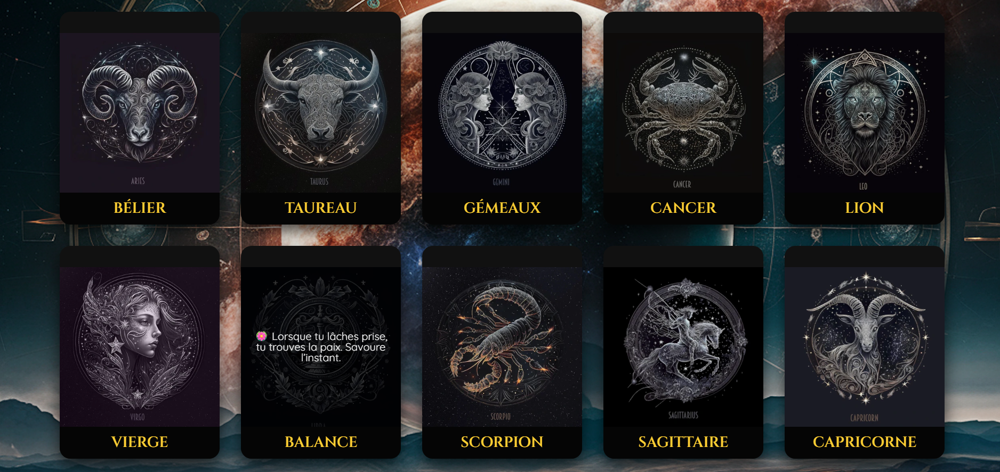
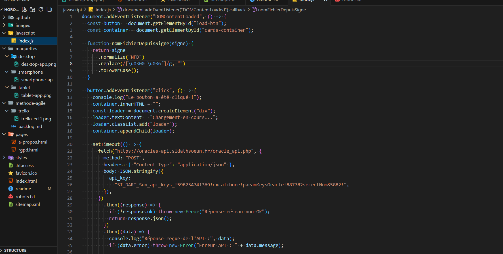
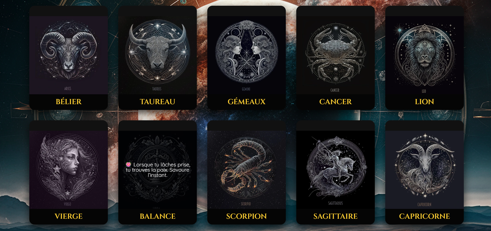
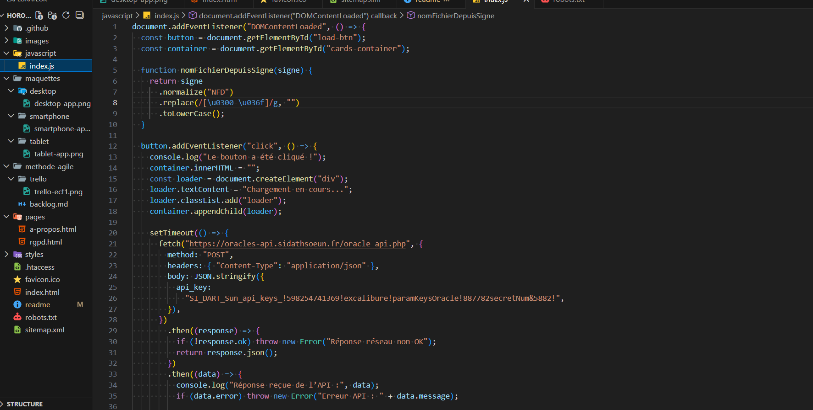

ECF1 - Horoscope
L'objectif de ce site était de mettre en lumière les compétences front-end apprises. C'est un site horoscope qui affiche les 12 signes avec au passage de la souris sur l'image, un texte disant votre horoscope. Utilisation de JavaScript, appel API, HTML, CSS !